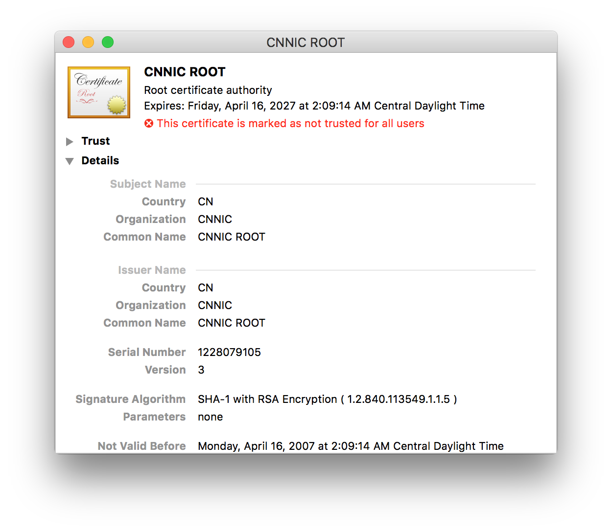
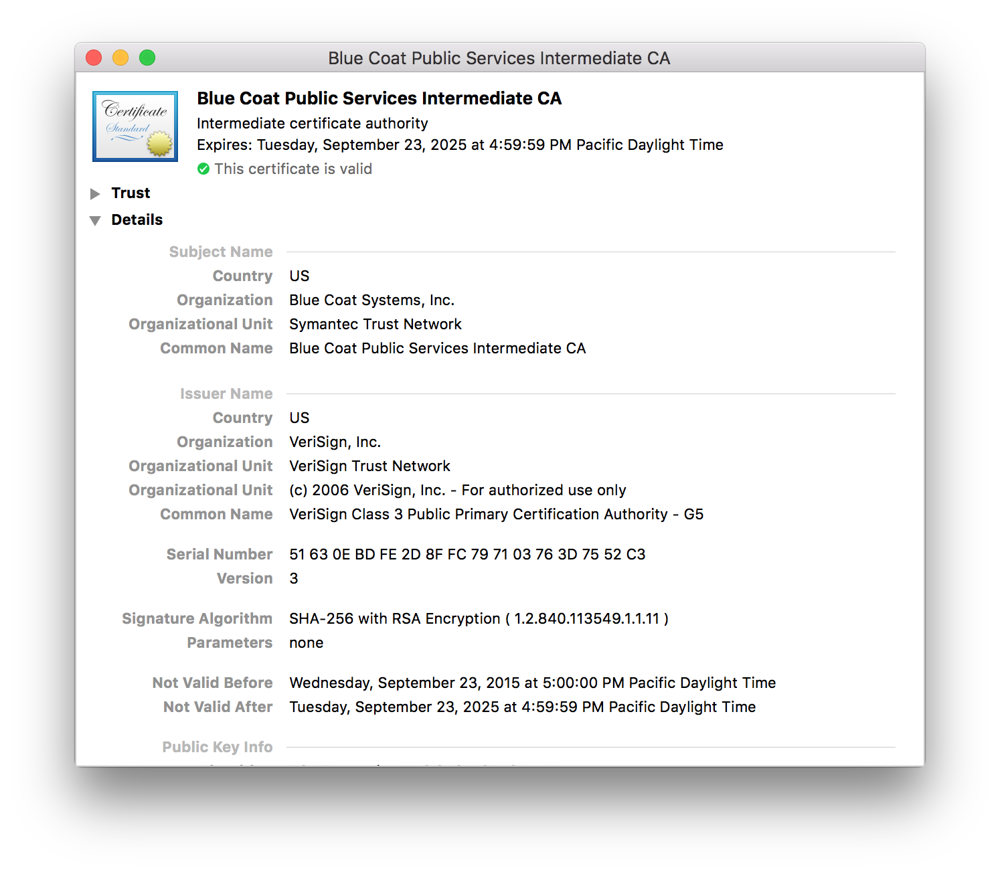
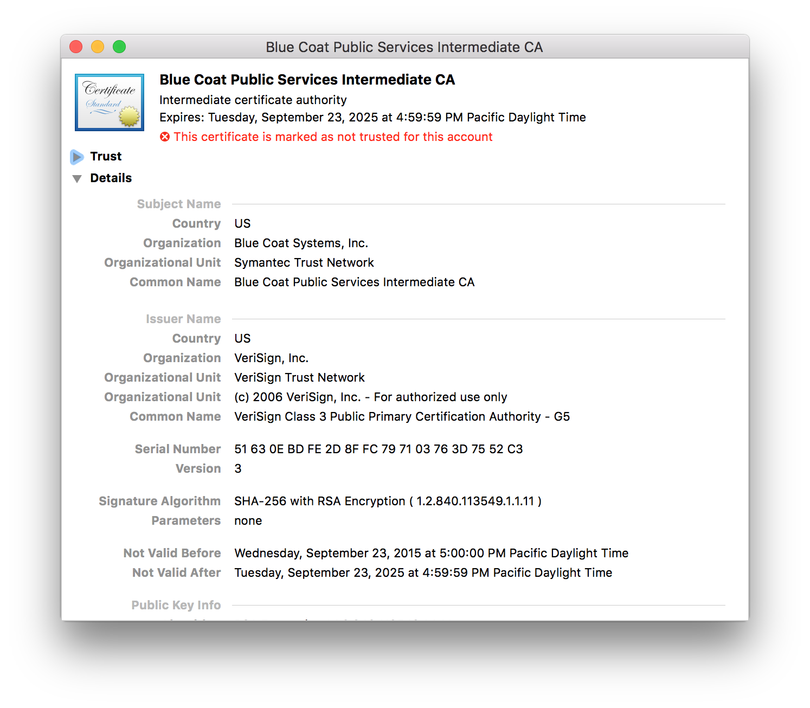
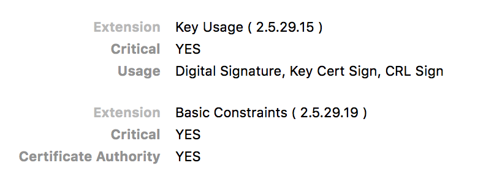

Created: 2016-05-28 Sat 14:07
https://www.lvh.io/hhgtls
(Hynek)
(Glyph)
docker pull lvhio/sslyze
<rant>
(Server Name Indication)
You trust x is x because a CA said so

Having internal CA makes sense
e.g sslbump
Browsers (esp. Chrome) should know this


https://blog.filippo.io/untrusting-an-intermediate-ca-on-os-x/
https://certsimple.com/blog/control-the-ssl-cas-your-browser-trusts
HTTP Strict Transport Security
Browsers should know this
Strict-Transport-Security: max-age=31536000
Used by all major browsers
Strict-Transport-Security: max-age=31536000; preload
HTTP Public Key Pinning
Browsers should know this
Early stages!
CA=true

… just gotta trust my root cert
Mossad threat model
How securely can you run a CA?
Both peers exchange & verify certs
Probably need your own CA